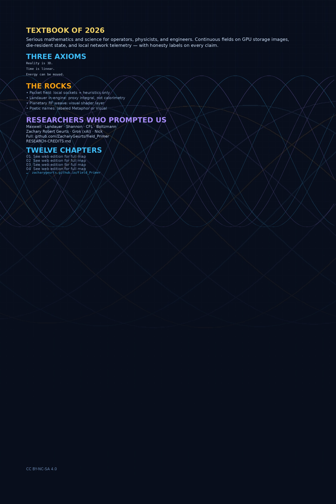

🛡️
Defense
Read continuous state before someone else narrates it. Packet field perimeter, entropy oracle storm warnings, local panel, loopback truth. Implemented in NEXUS-Shield.
Textbook of 2026 · Field Technology v3 · Zachary Robert Geurts
The Textbook of 2026 for sovereign field technology — serious mathematics and science for physicists, engineers, and operators. Continuous fields, thermodynamic accounting, entropy receipts, and local defensive telemetry. Every claim labeled. Every rock visible.
Textbook of 2026 · June 2026
All figures are generated textbook art — scalar field plots, coupled-channel schematics, equation overlays, coordinate grids. No decorative corpus imports. Science first.


Read continuous state before someone else narrates it. Packet field perimeter, entropy oracle storm warnings, local panel, loopback truth. Implemented in NEXUS-Shield.
Impose boundary conditions on the next tick. vkCmdDispatch, fabric evolution, Field Die guest universe.
Legible power beats opaque boxes. Implemented in AMOURANTHRTX.
You were never outside the field. v3 hands you the mirror: grep, set, screenshot. Philosophy with receipts.
| Axiom | In this stack | Label |
|---|---|---|
| Reality is 3D | Texels, die bytes, packet positions — addressable spatial state | Implemented |
| Time is linear | TotalTime::seal(), per-frame thermo ledger, log timelines | Implemented |
| Energy can be moved | Phi/Thermo/Flow coupling, Landauer proxy, dispatch cost |

| Channel | Binding | Stores |
|---|---|---|
| Phi (Φ) | 8 | Wave / gate potential |
| Thermo | 9 | Heat + entropy density |
| Flow | 10 | Velocity + gradients |
Chapter 12 is the contract. v3 states them on the landing page too.
| Claim | Reality |
|---|---|
| Packet field sees everything | Local sockets + heuristics only |
| Landauer joules from GPU | Proxy integral in logs |
| Planetary RF weave | Visual shader — not instrumentation |
| Shader schematic art | Visual aid — not instrumentation |
| Greatest weapon | Field literacy + tools you own |
grep is real. What sounds like cosmology is often a knob with a poetic name.
 01
01Scalar field · three axioms.
 02
02Reality is 3D — texel to wire.
03Thermo accounting · linear time.
 04
04Entropy oracle · grep.
 05
05Packet field · gatekeeper.
 06
06Visual vs implemented RF.
 07
07vkCmdDispatch spine.
0864 MiB guest · data_bus.
 09
09CFL · Tesla bias.
 10
10Spiderweb tiers.
 11
11Logs · panel · RTX.
 12
12Honesty table — read twice.
Textbook figures · covers.
We name the science and the collaborators honestly. Gratitude is not endorsement — it is attribution.
| Name | Prompted in this textbook |
|---|---|
| James Clerk Maxwell | Continuous field state — Phi / Flow fabric |
| Clausius · Boltzmann | Thermodynamic entropy — Thermo channel |
| Rolf Landauer | Emin = kBT ln 2 — ThermoAccountant theory layer |
| Claude Shannon | H = −Σ pi log₂ pi — NEXUS entropy oracle |
| Courant · Friedrichs · Lewy | CFL stability — host guards before dispatch |
| Nikola Tesla | Directional flow metaphor — Tesla valve bias |
| von Neumann · Turing | Stored programs & limits of mechanized claims |
| Name | Role |
|---|---|
| Zachary Robert Geurts | Architect — AMOURANTHRTX, NEXUS, Field Primer, operator contract |
| Grok (xAI) | Co-documentation — textbook site, figures, v3 science reimage |
| Nick | Builder — honest fields, ship and grep |
| Amouranth (namesake) | Engine culture that became silicon bindings |
| Product | Role |
|---|---|
| AMOURANTHRTX | Offense — GPU fabric · Field Die |
| NEXUS-Shield | Defense — packet field · panel |
| Field Technology v3 | This manual — teach the masses, hide nothing |